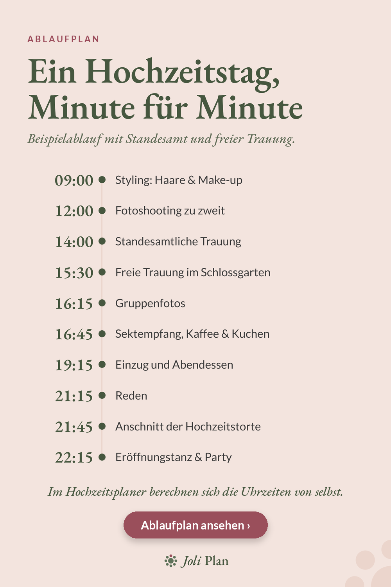

Hochzeitstag
Ablaufplan Hochzeitstag: ein Beispiel von der Frisur bis zum Eröffnungstanz
Ein Hochzeitstag läuft ruhiger, wenn alle wissen, was wann passiert. Hier ist ein Beispielablauf mit Standesamt und freier Trauung, den ihr an euren Tag anpassen könnt.

Der Beispielablauf
| Uhrzeit | Programmpunkt |
|---|---|
| 09:00 | Styling: Haare & Make-up |
| 12:00 | Fotoshooting zu zweit |
| 14:00 | Standesamtliche Trauung |
| 15:30 | Freie Trauung im Schlossgarten |
| 16:15 | Gruppenfotos |
| 16:45 | Sektempfang, Kaffee & Kuchen |
| 19:15 | Einzug und Abendessen |
| 21:15 | Reden |
| 21:45 | Anschnitt der Hochzeitstorte |
| 22:15 | Eröffnungstanz & Party |
Wie ihr den Ablauf an euren Tag anpasst
Das ist ein Beispiel, kein Muss. Fangt mit den festen Punkten an, etwa dem Termin der Trauung, und füllt die Zeiten davor und danach auf.
- Schreibt zu jedem Programmpunkt, wie lange er dauert, nicht nur, wann er beginnt.
- Plant zwischen Trauung und Sektempfang Zeit für Gruppenfotos ein.
- Gebt den Ablauf gedruckt an Trauzeugen und Dienstleister weiter.
Warum die Dauer wichtiger ist als die Uhrzeit
Wenn ihr nur Uhrzeiten notiert, müsst ihr bei jeder Verschiebung alles neu schreiben. Notiert ihr stattdessen die Dauer jedes Programmpunkts, ergeben sich die Uhrzeiten daraus. Verlängert sich das Fotoshooting um eine halbe Stunde, rutschen alle folgenden Punkte automatisch nach hinten.